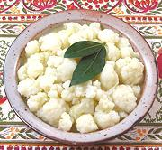

|
Cauliflower SaladCzech - Salat Z Kvetáku | ||||
| Makes: Effort: Sched: DoAhead: |
2 # ** 4-1/2 hrs Best |
With it's unusual dressing, this is a unique cauliflower salad, and a very good one too. It can be served as soon as it is well chilled, but can also be made a couple of days ahead and refrigerated. | |||
|
1-1/2 6 1 6 2/3 ------ 5 1/3 5 2/3 1/3 5 ---- |
# c t --- oz c T t t T --- |
Cauliflower (1) Water Bay Leaf Peppercorns Salt -- Dressing Onion Water Wine Vinegar, white Salt Sugar (opt) Oil (2) ---------- |
Make - (4-1/2 hrs - 20 min work + chill)
|